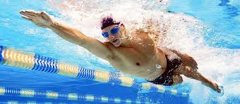
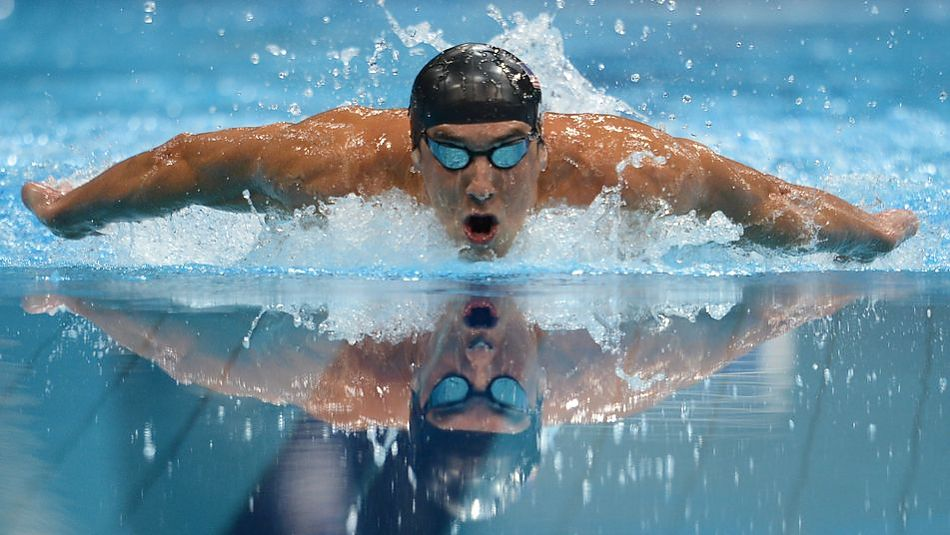
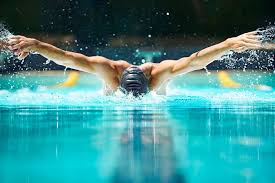

Плавание как вид спорта
Спортивное плавание — это не просто преодоление дистанции, это искусство владения телом в водной среде, требующее идеальной техники, выносливости и силы духа. В отличие от бега или игровых видов. На соревнованиях исход заплыва могут решить сотые доли секунды, что делает его одним из самых азартных и зрелищных на Олимпийских играх.
Стили плавания:
-

Вольный стиль (Кроль): Самый быстрый и динамичный стиль.
-

Брасс: Технически самый сложный и медленный стиль, требующий идеальной координации.
-

Баттерфляй (Дельфин): Самый энергозатратный и зрелищный стиль, имитирующий движения морских обитателей.
-

На спине: Единственный стиль, где старт производится из воды, а не с тумбы.
Спортивные моменты:
- 15 метров — максимальное расстояние, которое пловец может проплыть под водой после старта или поворота по правилам World Aquatics.
- 50 метров — длина олимпийского бассейна (так называемая «длинная вода»).
Польза от плавания:
- 800+ калорий — может сжечь профессиональный пловец за час интенсивной тренировки.
- Развивает дыхательную систему.
- Формирует «мышечный корсет» без ударной нагрузки на позвоночник.
- Способствует закаливанию и укреплению нервной системы.